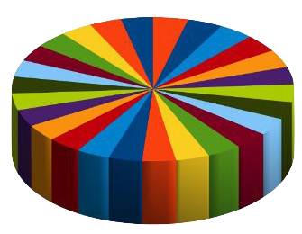

HW 02 - Data Visualization
This assignment is meant to get you more comfortable with generating and customizing visualizations in R using ggplot2. Notably, this assignment is very open-ended; there are multiple distinct visualizations that could be totally “correct” for each question. You may make a different decision than your classmate and could both be correct.
Also, please note that this assignment will take you way longer than you think it will. Definitely do not wait until the last minute to start.
Getting started
Here are the steps for getting started:
- Start with an assignment link that creates a repo on GitHub with starter documents (link on Canvas).
- Clone this repo into RStudio on datahub
- Make any changes needed as outlined by the tasks you need to complete for the assignment
- Periodically commit changes (for example, once per each new part)
- Push all your changes back to your GitHub repo
Your final GitHub push prior to the deadline will be used for grading. (This means even if you made mistakes before that submission on GitHub, you won’t be penalized for them, so long as the final state of your work is correct).
Imports
The following package must be imported prior to completing this homework: tidyverse.
Ground Rules
For this assignment, all visualizations must:
- be completed using
ggplot2 - have an informative title and labeled axes
- follow good visualization practices (discussed in class)
Part I: Imitation is the highest form of flattery
In class we learned a handful of ways to customize visualizations. Now, it’s your turn to apply what you learned by recreating someone else’s visualization.
Question 1
For this question, find a well-designed visualization somewhere on the Internet that you think does a good job displaying important or interesting information and recreate the visualization as close as you can using ggplot2.
To make this easier on yourself, you’ll likely want to find a visualization where the data are readily available. (To get started, FiveThirtyEight makes a lot of the data from their articles available and has many charts in their articles. You are not required to recreate a visualization from FiveThirtyEight; however, if you’re not sure where to start, you have this option.) Your answer should include an image of the original visualization, a reference to the original image (this could simply be a URL), and your code + recreation.
Notes:
- To insert an image in an RMarkdown document, you can use the syntax
. - The R/
ggplot2code to create your visualization cannot already exist on the internet. (For example, choosing to recreate a plot from the R Graph Gallery would not be an option because all the code is already there and you wouldn’t learn as much.) - Additional sources of strong visualizations: NYT Graphics and their yearly roundup incl. other sources; The Economist
Question 2
Briefly explain what you learned about ggplot2 in the process of re-creating this visualization.
Question 3
Explain how your visualization differs from the original (It’s OK if your plot is not a perfect recreation!)
Part II: Take a sad plot and make it better
Question 4
This question was inspired by Alison Hill’s talk. The idea here is that there is a lot of data all around us and a whole bunch of visualizations. Some of them are really excellent, and some could be improved. Choose a less-than-ideal visualization you’ve created in the past OR a visualization you’ve found out in the world that could benefit from a redesign and/or significant visual improvement. Your answer should include an image of the original visualization, a reference to the original image (this could simply be a URL), and your code + improved version.
Note: If you’re unsure where to look for visualizations that would benefit from improvement, check out Flowing Data’s Ugly Charts or Reddit’s Data is ugly. You may need to recreate/approximate the dataset (meaning store the values from the visualization in a tibble) needed to generate the visualization prior to improving the design. (It’s ok if the data are not exact, but you want them to be close, as we’re focusing on the visual aspects.)
Question 5
Briefly explain what you learned about ggplot2 in the process of re-creating this visualization.
Question 6
Explain why you made the design and visualization choices you did for your improved version.
Submission
Be sure to knit your file to HTML, look at the output HTML file to make sure everything looks as you expected, and then commit and push your final changes to GitHub. We will be grading from the HTML file. Before you wrap up the assignment, make sure all documents are updated on your GitHub repo.